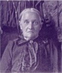

The Kleinsorge Family Tree - Family Card
The Kleinsorge Family Tree - Family Card
KLEINSORGE, Johann Fredrick Anton(May 17, 1801 - Jan 3, 1864)
NOELLEKE, Maria Franziska(Feb 25, 1812 - May 18, 1841)

b.
d.
ado.

b. Oct 3, 1838, Fredeberg, Germany
d. 1919, Westphalia, Kansas
ado.
Children
EICKHOFF, Catharine(Apr 3, 1870 - )
EICKHOFF, Mary(May 6, 1871 - Dec 11, 1941)
EICKHOFF, Anton Peter(Dec 9, 1874 - Dec 6, 1940)
EICKHOFF, Sophia(Jun 28, 1890 - )
EICKHOFF, Elizabeth(Dec 28, 1896 - Feb 19, 1962)